Implementation
In order to be able to have the MQTT data arrive inside the SepsiLab network, multiple settings had to be configured on the routers we have available.
I’ll be going over the following points:
GNS3
For more information about GNS3, check the GNS3 homepage
Before implementing the real world solution, I first tested everything with GNS3. This allowed me to try different configurations in a safe environment. The setup looks as follows:
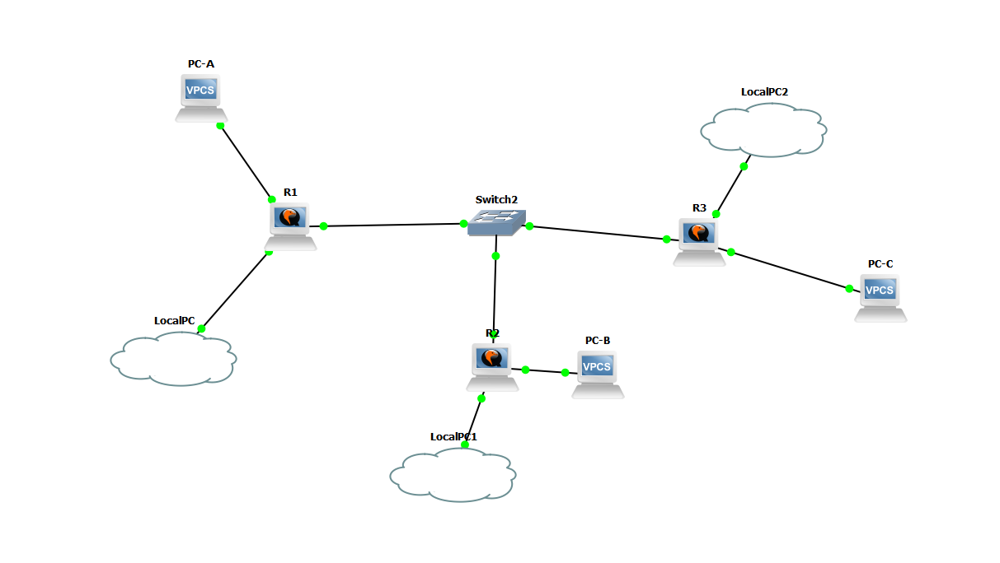Because I was unable to replicate an ISP, I substituted it by using a switch. This solution isn’t the exact same as it would be if there was an actual ISP, but it was good enough to simulate the intended solution.
Since the implemented solution is very similar to the simulated one, I won’t go into more depth here.
WireGuard
For more information on WireGuard and it’s use, visit the WireGuard website
First things first, before we can setup our NAT settings and firewall, we need to create the WireGuard interfaces we need on all routers.
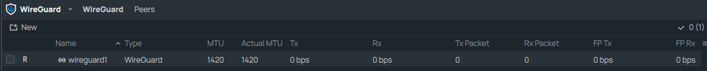The interface look similar on all routers, the only difference will be the generated Public and Private Key and the IP address we will assign to it.
SepsiLab:
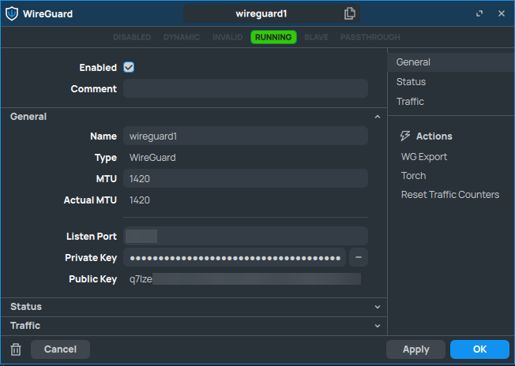 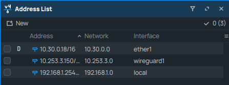sagan:
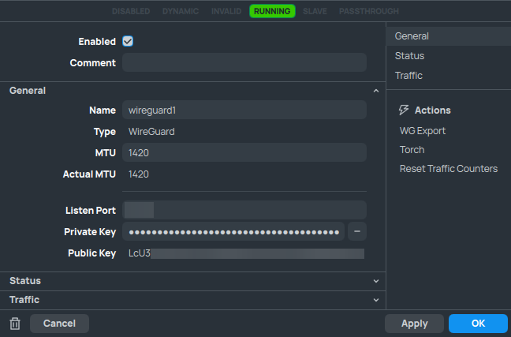
After setting up the interface, we need to establish the WireGuard tunnel by setting up the peers. To connect the routers, we only need 1 public IP address. In our case, router sagan is the publicly reachable device. As such, we can configure the endpoint address for the SepsiLab router to point towards router sagan.
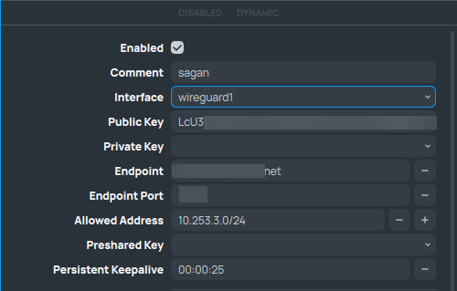 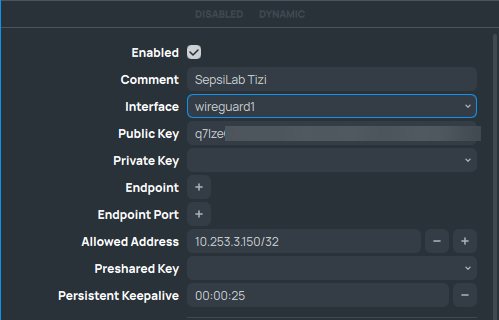However, this does mean that the only way the WireGuard tunnel can be established, is when router SepsiLab initiates it. Router sagan will not be able to find the SepsiLab router otherwise.
NAT
For more information on NAT, check the Wikipedia page
After setting up our WireGuard interface, we can set up our NAT.
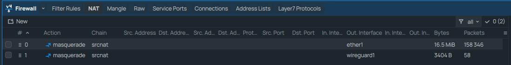 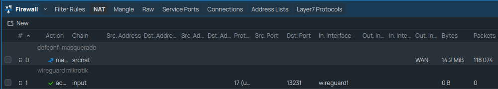For our setup, I’ve opted to use the Masquerade functionality of the MikroTik devices. This setting is similar to PAT and will allow us to use devices on our local network to connect over the VPN tunnel as well.
On router sagan, we do not need the Masquerade functionality for the WireGuard interface, as such it’s only configured for the WAN interface.
Firewall
To secure the routers from unauthorized access, we have to configure some firewall rules. These are used to filter through traffic coming into the router.
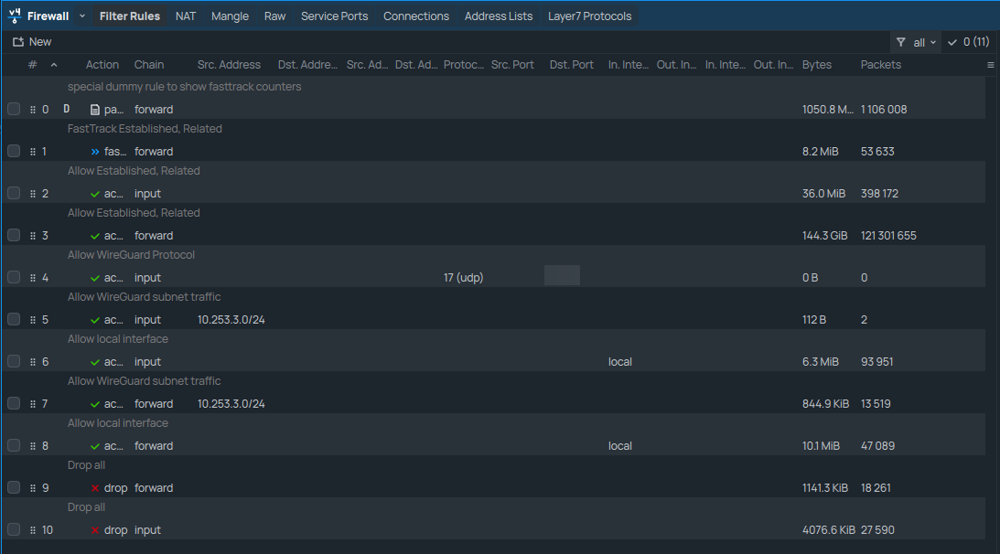 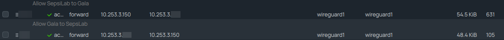